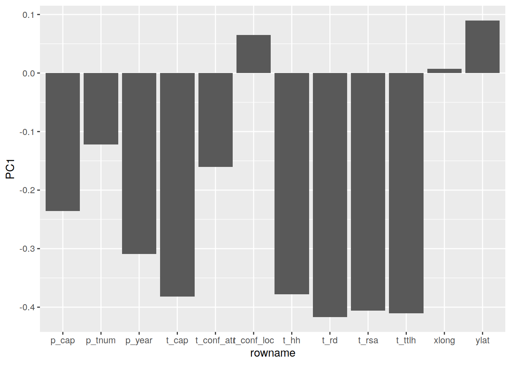
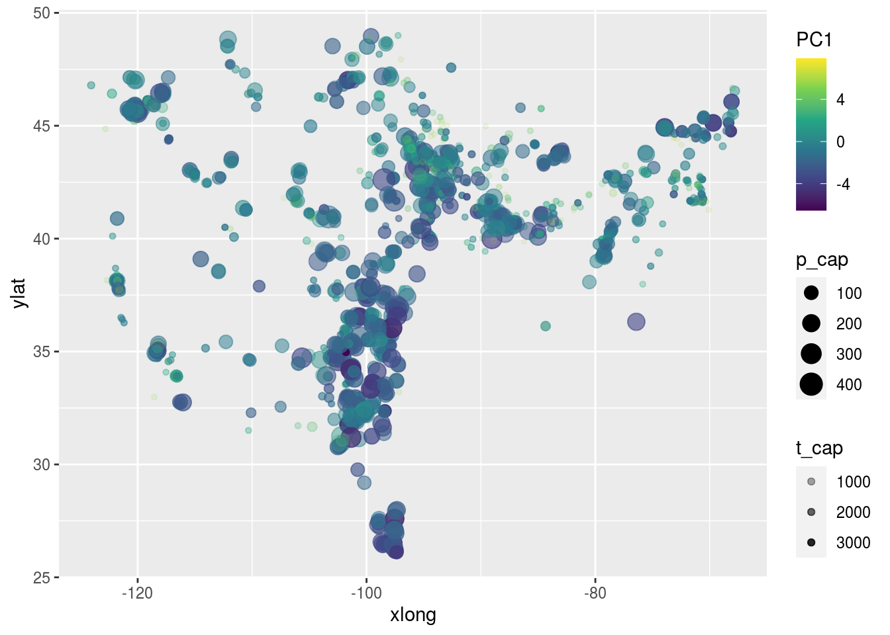
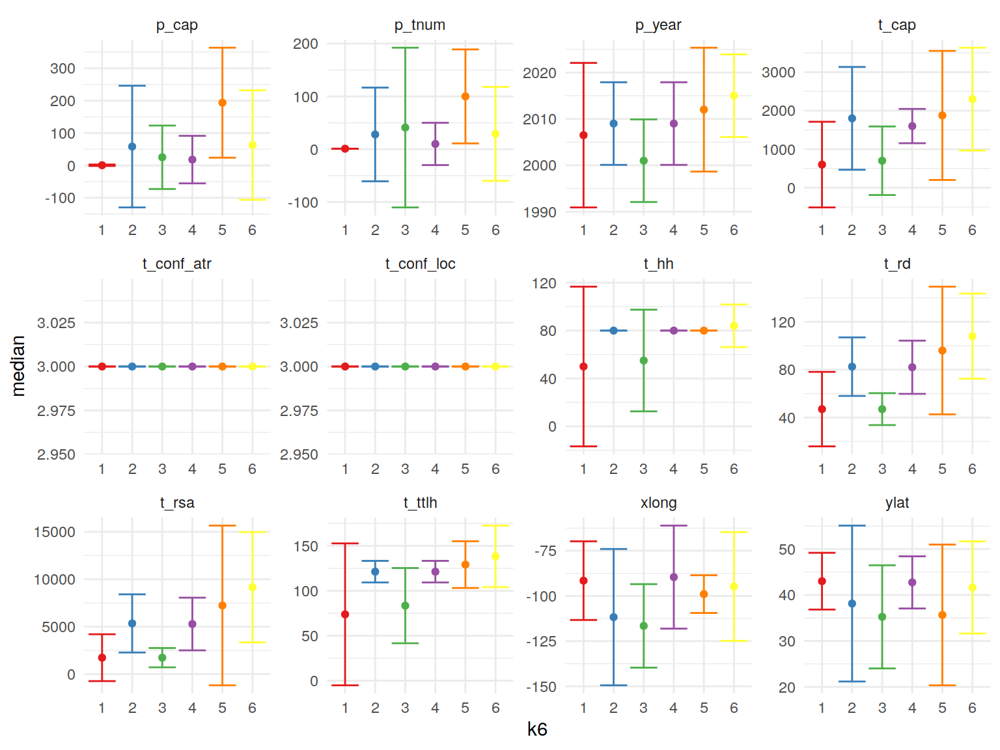
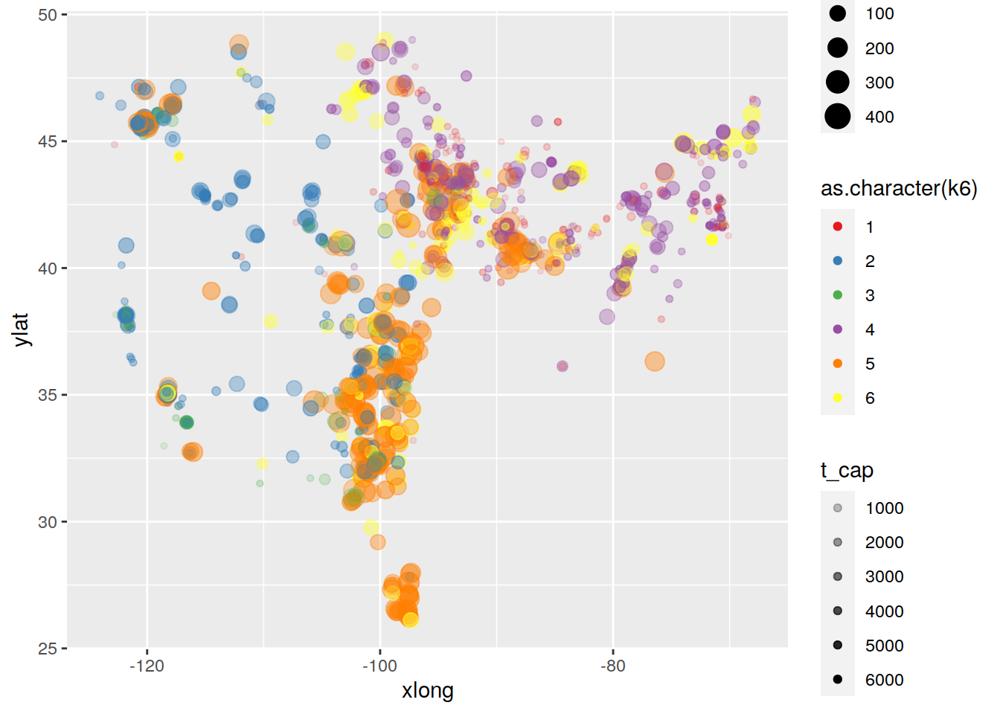
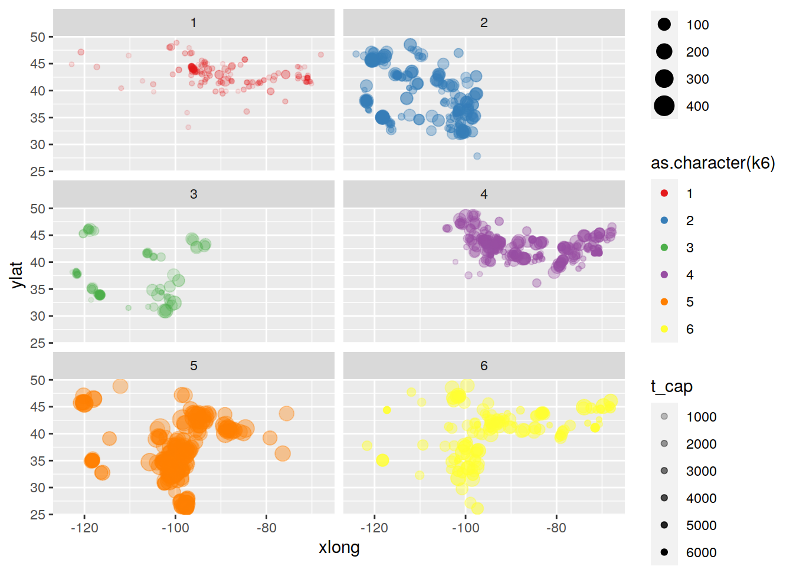
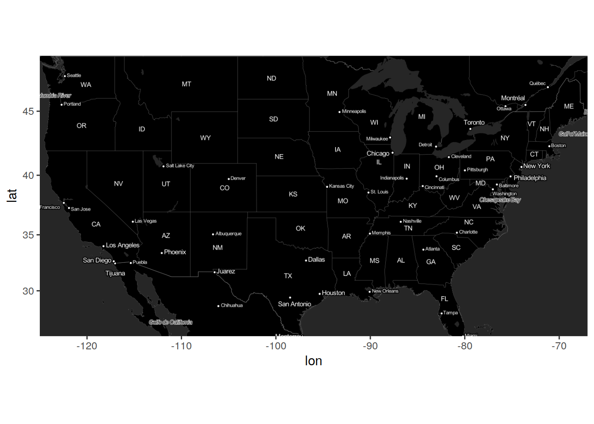
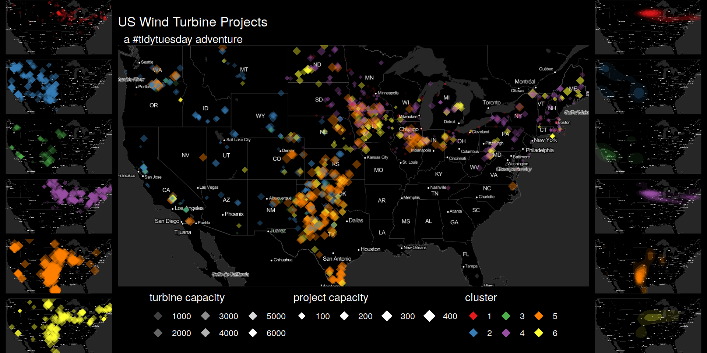

Tidy Tuesday: USA Wind Power
Load Data
dat <- read_csv("https://github.com/rfordatascience/tidytuesday/raw/master/data/2018/2018-11-06/us_wind.csv")
## get all the missing data to NA
dat <- dat %>% mutate_all(.funs = funs(replace(., . %in% c(-9999, "missing"), NA)))
## drop rows and columns with high missing rate
dat.comp <- dat %>% select_if( function(x){sum(is.na(x))/length(x) < .15}) %>%
filter(rowMeans(is.na(.)) < 0.15)
## get info at project level
dat.p.num <- dat.comp %>% group_by(p_name) %>%
select_if(is.numeric) %>% select(-case_id) %>%
summarise_all(.funs = function(x){mean(x, na.rm = T)}) %>%
ungroup %>% select(-p_name) %>% filter(rowSums(is.na(.)) == 0) %>%
filter(xlong < 100 & xlong > -125 & ylat > 20) %>% ## remove some geographic outliers
filter(t_cap > 0) Reduce Dimensionality
Do a PCA
Looks like PC1 makes up the bulk of the difference, and it is due to turbine rotor sweep area
dat.pca <- prcomp(dat.p.num, center = TRUE, scale. = TRUE)
broom::tidy(dat.pca, 'd')## # A tibble: 12 x 4
## PC std.dev percent cumulative
## <dbl> <dbl> <dbl> <dbl>
## 1 1 2.34 0.456 0.456
## 2 2 1.38 0.158 0.615
## 3 3 1.01 0.0846 0.699
## 4 4 0.983 0.0806 0.780
## 5 5 0.950 0.0753 0.855
## 6 6 0.860 0.0617 0.917
## 7 7 0.704 0.0413 0.958
## 8 8 0.537 0.0240 0.982
## 9 9 0.355 0.0105 0.993
## 10 10 0.278 0.00645 0.999
## 11 11 0.109 0.001 1.00
## 12 12 0.0102 0.00001 1dat.pca$rotation %>% as.data.frame() %>% rownames_to_column() %>%
ggplot(aes(y = PC1, x = rowname)) +
geom_col()
Some plots
dat.p.num %>%
bind_cols(as.tibble(dat.pca$x)) %>%
ggplot(aes(x = xlong, ylat, color = PC1, size = p_cap, alpha = t_cap)) +
scale_color_viridis_c() +
geom_point()
Cluster
## Use the PCs that explain 95% of the variance
dat.k <- dat.pca$x %>% as.tibble %>%
select(1:7) %>%
mutate(
k2 = kmeans(., 2)$cluster,
k3 = kmeans(., 3)$cluster,
k4 = kmeans(., 4)$cluster,
k5 = kmeans(., 5)$cluster,
k6 = kmeans(., 6)$cluster
) %>% bind_cols(dat.p.num)Summary of Clusters
dat.k %>%
group_by(k6) %>%
select(-matches('^PC|k\\d')) %>%
summarise_all(list(.median = median, .mad = mad))%>%
gather(key, value, -k6) %>%
separate(key, into = c('measure', 'stat'), '\\.') %>%
mutate(measure = str_remove(measure, "_$"),
k6 = as.factor(k6)) %>%
spread(stat, value) %>%
ggplot(aes(x = k6, y = median, color = k6)) +
geom_errorbar(aes(ymin = median-3*mad, ymax = median+3*mad)) +
geom_point() +
facet_wrap(~measure, scales = 'free')+
theme_minimal() +
scale_color_brewer(palette = "Set1", guide = guide_none())
Cluster Plots
dat.k %>%
ggplot(aes(x = xlong, ylat, color = as.character(k6), size = p_cap, alpha = t_cap)) +
scale_color_brewer(palette = "Set1") +
geom_point()
dat.k %>%
ggplot(aes(x = xlong, ylat, color = as.character(k6), size = p_cap, alpha = t_cap)) +
scale_color_brewer(palette = "Set1")+
geom_point() +
facet_wrap(~ as.character(k6), nrow = 3)
Make a pretty map under the data
library(ggmap)
invert <- function(M) {
i <- function(x){rgb(t(255-col2rgb(x))/255)}
m <- M %>% apply(2, i) %>% as.raster()
class(m) <- class(M)
attr(m, "bb") <- attr(M, "bb")
return(m)
}
us <- c(left = -125, bottom = 25.75, right = -67, top = 49)
m <- get_stamenmap(us, zoom = 5, maptype = "toner-lite")
ggmap(invert(m))
Plots
plot.points <- ggmap(invert(m), extent = 'device') +
geom_point(aes(x = xlong, y = ylat, color = as.character(k6), size = p_cap, alpha = t_cap), data = dat.k, pch = 18) +
scale_color_brewer(palette = "Set1") +
facet_wrap(~k6, ncol = 1) +
theme_void() +
theme(legend.position = 'none', strip.text = element_blank()) +
theme(plot.background = element_rect(fill = "black", color = "black"),
panel.background = element_rect(fill = NULL))
plot.density <- ggmap(invert(m), extent = 'device') +
stat_density2d(aes(x = xlong, y = ylat, alpha = ..level.., fill = as.character(k6), color = NULL), data = dat.k, geom = "polygon") +
scale_fill_brewer(palette = "Set1") +
facet_wrap(~k6, ncol = 1) +
theme_void() +
theme(legend.position = 'none', strip.text = element_blank()) +
theme(plot.background = element_rect(fill = "black", color = "black"),
panel.background = element_rect(fill = NULL))
plot.all <- ggmap(invert(m), extent = 'device') +
geom_point(aes(x = xlong, y = ylat, color = as.character(k6), size = p_cap, alpha = t_cap), data = dat.k, pch = 18) +
scale_color_brewer(palette = "Set1") +
guides(
size = guide_legend(title = "project capacity",title.position = 'top', override.aes = list(color = "white")),
alpha = guide_legend(title = "turbine capacity",title.position = 'top', override.aes = list(color = "white", size = 4)),
color = guide_legend(title = 'cluster', title.position = 'top', override.aes = list(size = 4))
) +
ggtitle("US Wind Turbine Projects", " a #tidytuesday adventure") +
theme_void() +
theme(title = element_text(color = 'white'),
legend.position = 'bottom',
legend.background = element_blank(),
legend.text = element_text(color = "white"),
legend.title = element_text(color = "white"),
legend.key = element_blank(),
axis.text = element_blank(),
axis.title = element_blank(),
plot.background = element_rect(fill = "black", color = "black"),
panel.background = element_rect(fill = NULL))Squish together
library(cowplot)
final.plot <- plot_grid(plotlist = list(plot.points, plot.all, plot.density), nrow = 1, rel_widths = c(.25,1,.25))
ggdraw(final.plot) +
theme(plot.background = element_rect(fill = "black", color =
"black"))
Tanner Koomar
PhD Candidate
My research interests include computational genetics, machine learning and science communication